《追色手记03》学习资料
滨田英明日系小清新：从摄影风格拆解到 Lightroom 仿色实操
视频标题 | 【追色手记03】教程来了！什么是日系小清新风格？滨田英明摄影思路拆解！ |
作者 | 摄影师聿铭 |
时长 | 约 14 分 11 秒 |
来源 | https://www.bilibili.com/video/BV1iG4y1n7Wo |
整理日期 | 2026-05-22 |
说明：本文根据视频音频转写、画面截取与内容校对整理，保留学习所需的方法、步骤和关键截图，不包含逐字稿。
滨田作品参考截图
以下为视频中展示的滨田英明作品和对照画面截图，用来观察内容题材、1:1 构图、高调影调、淡雅蓝/清新绿以及肤色倾向。它们是视频截图，可能保留字幕、直方图或取色标注。
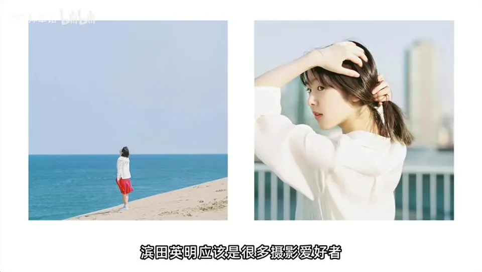 海边人像：淡雅蓝与留白 | 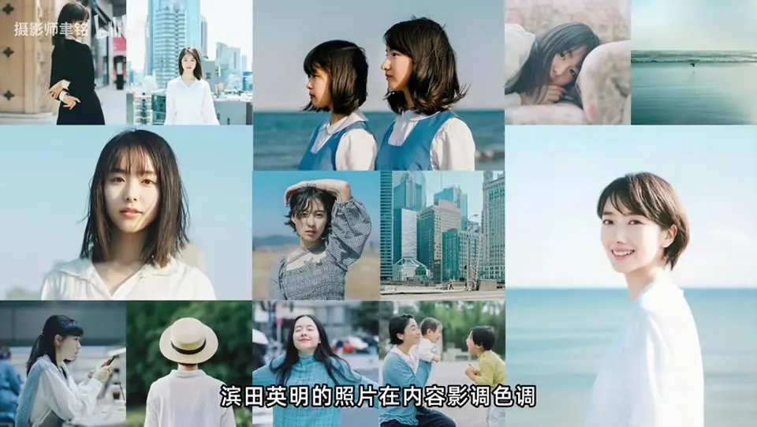 内容范围：人像与生活记录 |
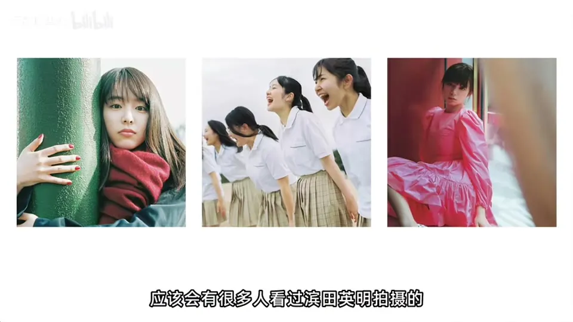 女生人像：自然不做作 | 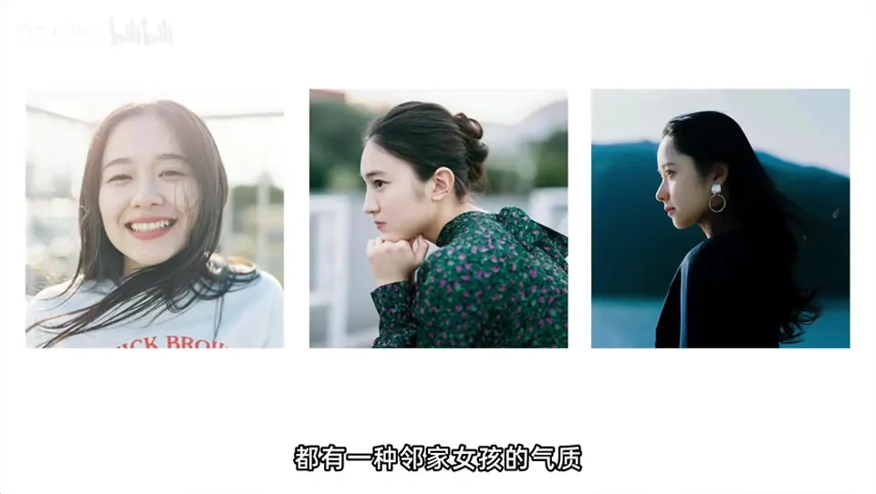 邻家感：舒适、亲近 |
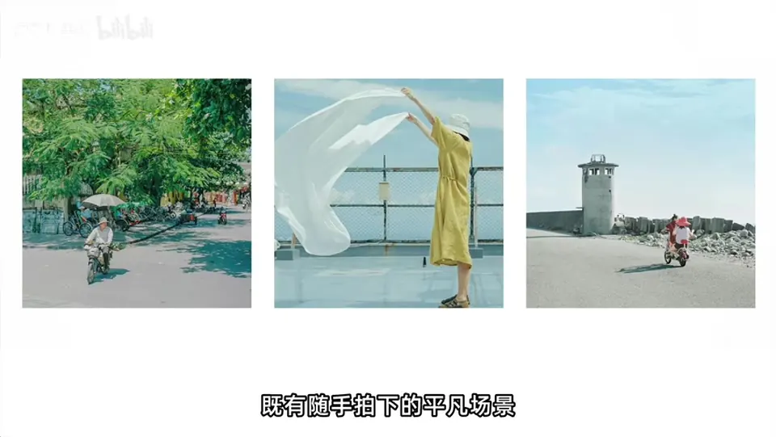 生活场景：平凡而温情 | 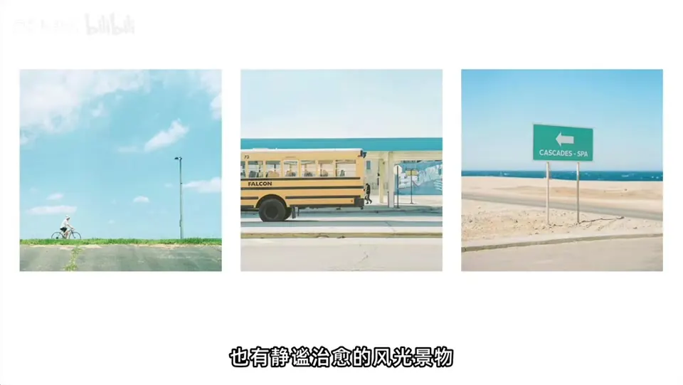 明亮场景：低压迫感 |
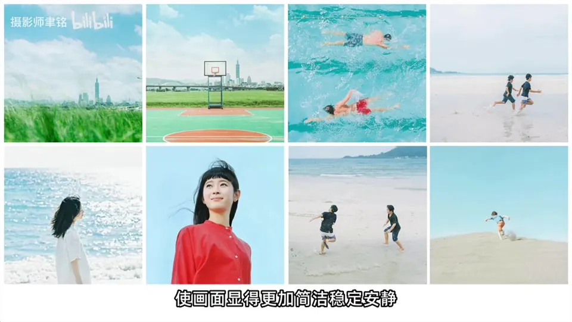 淡雅蓝：蓝天与海边题材 | 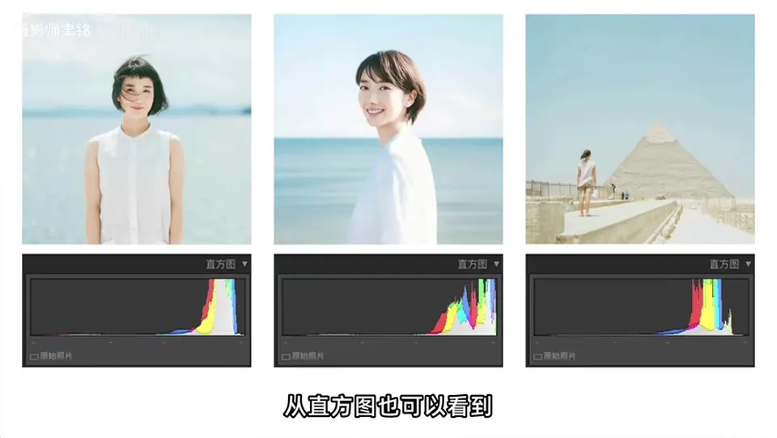 高调直方图：亮部集中 |
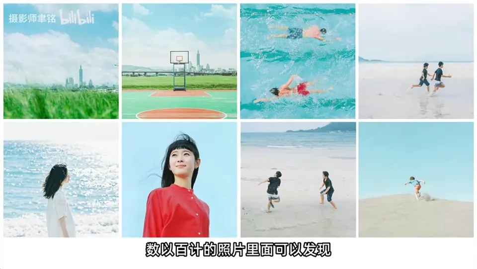 淡雅蓝与清新绿并存 | 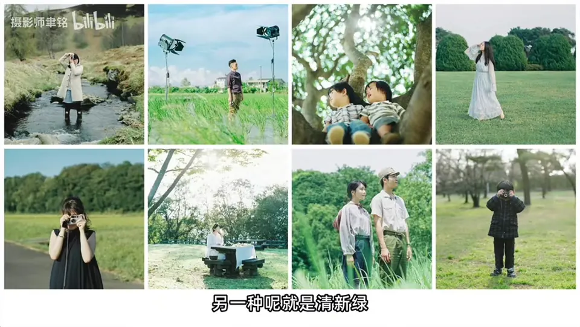 清新绿：森林草地题材 |
|
肤色取样：淡淡黄色 | 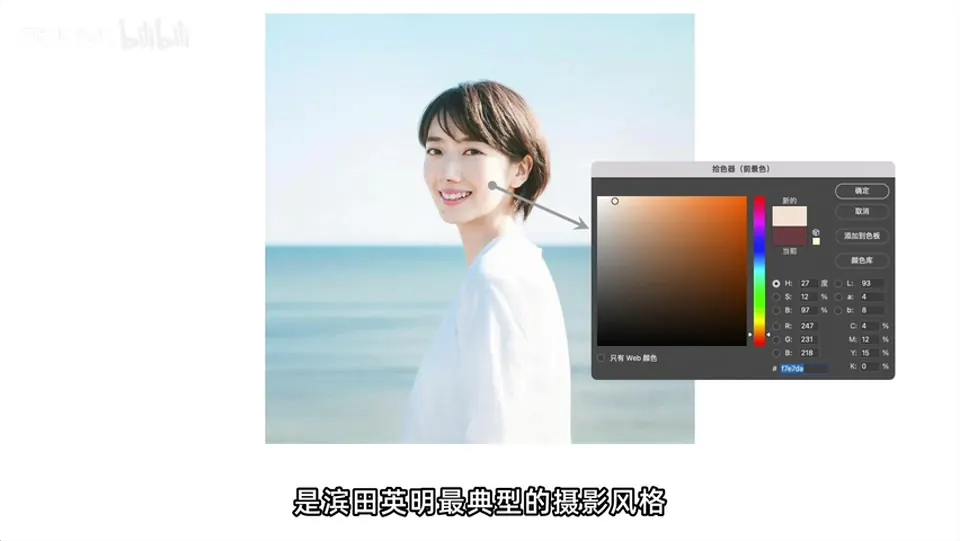 肤色处理：黄中带一点红润 |
一页速览
风格核心 | 滨田英明的日系小清新不是单纯“调亮调淡”，而是温情自然的内容、稳定安静的 1:1 构图、高调影调与淡雅蓝/清新绿共同作用。 |
内容特点 | 既有人像，也有生活记录、童真场景、活动现场和风光景物；共同气质是自然、舒适、温情。 |
影调特点 | 画面整体亮度高，直方图偏高调；暗部和亮部略微缺失，有明快但不刺眼的胶片感。 |
色调特点 | 两类代表色：蓝天大海场景的淡雅蓝，森林草地场景的清新绿；肤色常呈淡淡黄色。 |
仿色顺序 | 先 1:1 裁剪和基础高调处理，再用校准建立肤色和蓝色基调，曲线控制亮度与黑白端，HSL 和颜色分级做精修。 |
学习目标
能用“内容、影调、色调”框架拆解日系小清新，而不是只记一组参数。
理解 1:1 正方形构图为什么会让画面更稳定、安静、主体更集中。
能读出高调直方图：整体偏亮，同时暗部和亮部略有缺失。
能区分淡雅蓝和清新绿两类色调，并根据场景选择仿色方向。
能在 Lightroom 中用基础面板、校准、曲线、HSL、颜色分级完成一套仿色流程。
核心方法：三层拆解
维度 | 观察重点 | 本片结论 |
内容 | 题材、主体、情绪和构图比例。 | 作品包罗人像与生活场景，但共同呈现温情自然；大量使用 1:1 正方形构图。 |
影调 | 整体亮度、直方图分布、黑白端状态。 | 高调、明快，暗部不沉，亮部不刺；黑白端略缺失，保留胶片味。 |
色调 | 主色、肤色、环境色之间的关系。 | 蓝天大海是淡雅蓝，森林草地是清新绿，肤色偏淡黄。 |
Lightroom 实操流程
裁剪构图：先裁成 1:1 正方形，并让人物处于更居中的位置。这样主体突出，画面也更干净、稳定、安静。
基础色温：色温往冷调，色调微微向洋红，让肤色保留一点泛红感。色温是整体调色中最快速、最直观的工具。
基础影调：阴影和黑色色阶提亮，高光和白色色阶压暗，保留亮部细节；对比度略加，避免画面太灰。
质感与色彩强度：画面偏肉时加一点清晰度；降低饱和度、提高鲜艳度，让色彩更自然协调。
相机校准：红原色和绿原色向右，建立偏黄又微红的肤色；蓝原色向左，让背景蓝带一点青蓝感，并适度提高蓝色饱和度。
明度曲线：曲线整体向上拱，重点提亮偏高光区域，让人物亮得更多；同时压住最暗和最亮，形成轻微黑白端缺失。
RGB 曲线：红曲线轻微 S 形，让暗部偏冷、亮部偏暖；绿、蓝曲线小幅平衡，三条曲线要一起看。
HSL：橙色控制肤色：色相往黄、饱和度略降、明亮度提高；蓝色控制背景：色相往青、饱和度降低、明亮度提高。
颜色分级：高光加入少量青蓝让画面更清新；阴影加入一点暖色，避免整体冷得生硬。
最终判断：不追求两张照片完全一样，尤其不能用后期硬改客观光照条件；只要内容、影调和色调方向正确即可。
工具速查表
工具 | 用途 | 本片操作 | 注意点 |
裁剪 | 建立风格化构图 | 1:1 正方形，主体居中。 | 正方形构图需要前期拍摄和后期裁切共同服务。 |
基础面板 | 先定整体亮度与冷暖 | 冷色温、微洋红；提阴影黑色，压高光白色。 | 只做大方向，不在基础面板完成所有细节。 |
清晰度/鲜艳度 | 改善质感和色彩协调 | 清晰度轻加；饱和度降，鲜艳度升。 | 小清新不是糊，人物轮廓仍需清楚。 |
校准 | 建立全局色彩基调 | 红右、绿右、蓝左；蓝色饱和适当提高。 | 校准影响全局，幅度过大会假。 |
明度曲线 | 精确提亮与压住两端 | 曲线上拱，压最暗和最亮。 | 比直接拉曝光更能控制人物和背景的受影响程度。 |
RGB 曲线 | 制造冷暖关系 | 暗部偏冷，亮部偏暖，三条曲线联动平衡。 | 单看一条曲线会偏色，要调完整体再判断。 |
HSL | 精修肤色和背景 | 橙色修肤色，蓝/浅绿修海天背景。 | 肤色对了，其他颜色小幅偏差也不影响整体。 |
颜色分级 | 补足氛围 | 高光加青蓝，阴影加暖色。 | 青蓝过量会发冷，阴影暖色可拉回自然感。 |
关键截图与讲解
图 01 | 01:00 | 仿色三要素：内容、影调、色调。
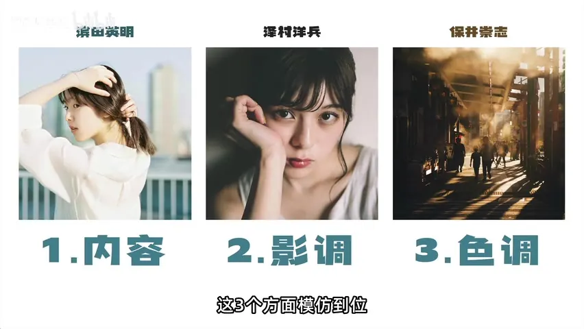
学习要点：滨田风格同样要从三层拆解，而不是直接套参数。
图 02 | 01:51 | 内容：小清新女生人像。
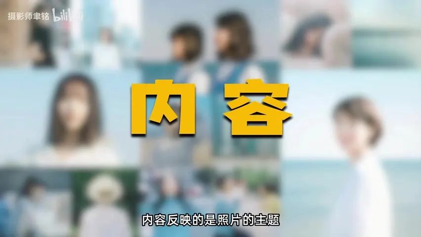
学习要点：人物气质自然、不做作，是滨田人像的重要基底。
图 03 | 02:21 | 内容：生活记录。
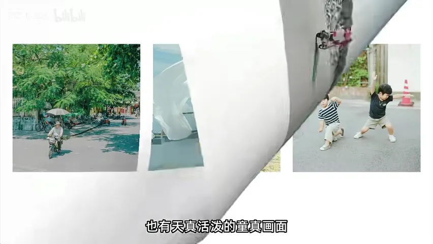
学习要点：除了人像，还有平凡场景、童真画面、活动现场和治愈风景。
图 04 | 03:03 | 1:1 正方形构图。
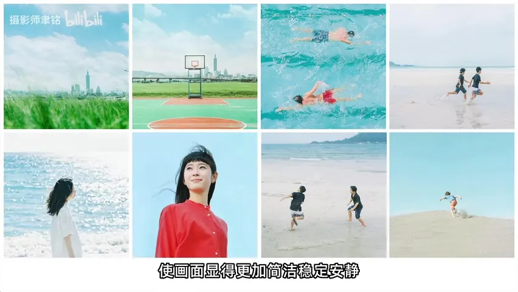
学习要点：主体常处于中间位置，让画面更简洁、稳定、安静。
图 05 | 03:51 | 高调直方图。
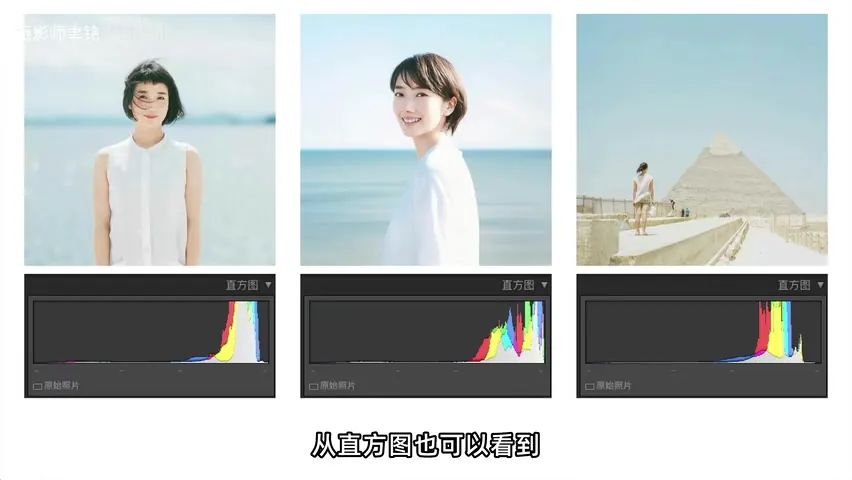
学习要点：整体亮度偏高，画面明快，暗部和亮部略微缺失。
图 06 | 04:24 | 两类色调：淡雅蓝与清新绿。
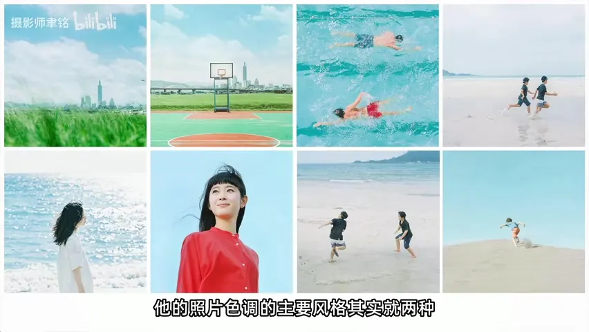
学习要点：蓝天大海走淡雅蓝，森林草地走清新绿，色调与题材高度相关。
图 07 | 04:51 | 肤色：淡淡黄色。
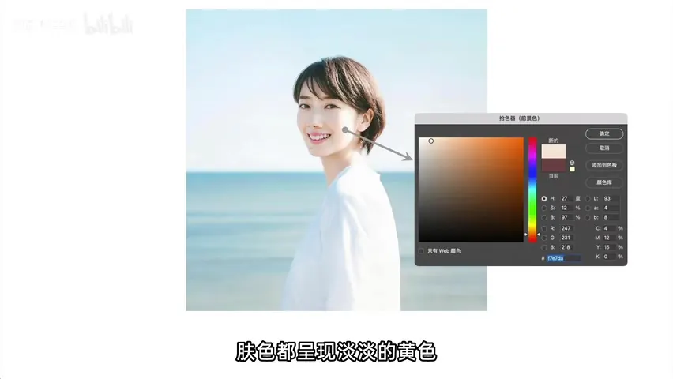
学习要点：淡黄肤色是许多日系摄影师常用的人像处理方式。
图 08 | 05:44 | 实操第一步：裁成 1:1。
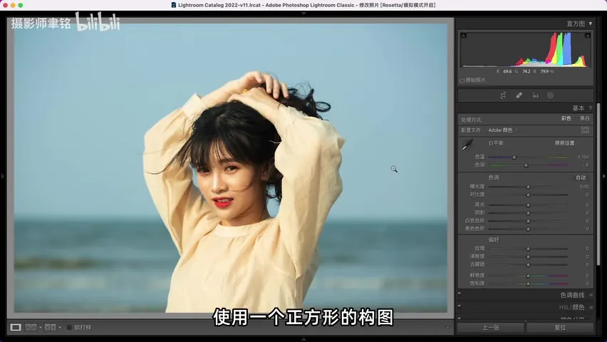
学习要点：先建立构图气质，再进入具体调色。
图 09 | 06:26 | 基础面板：处理高调影调。
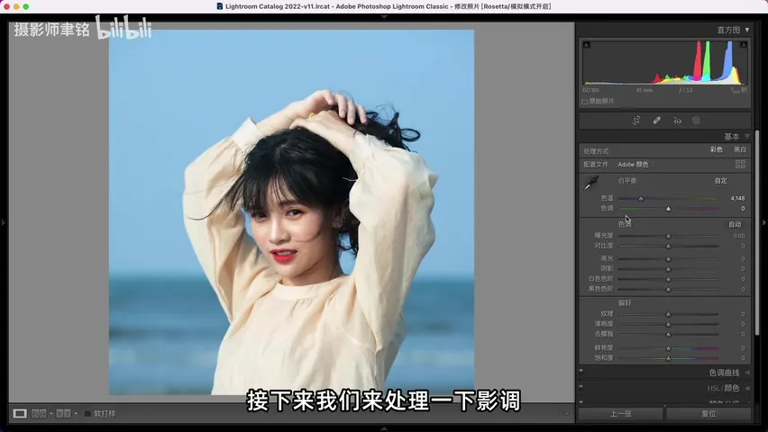
学习要点：提阴影黑色、压高光白色，先得到可继续加工的明快基础。
图 10 | 07:11 | 饱和度与鲜艳度搭配。
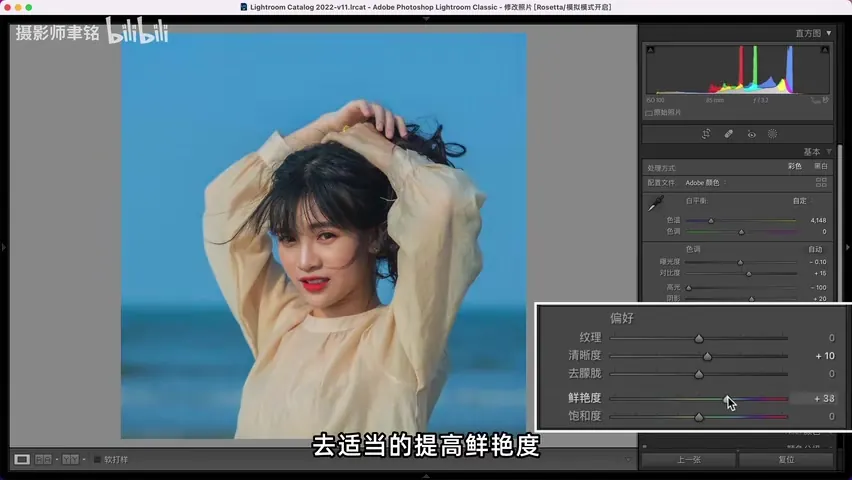
学习要点：降低饱和度同时提高鲜艳度，画面更自然、更协调。
图 11 | 07:49 | 校准：处理肤色。
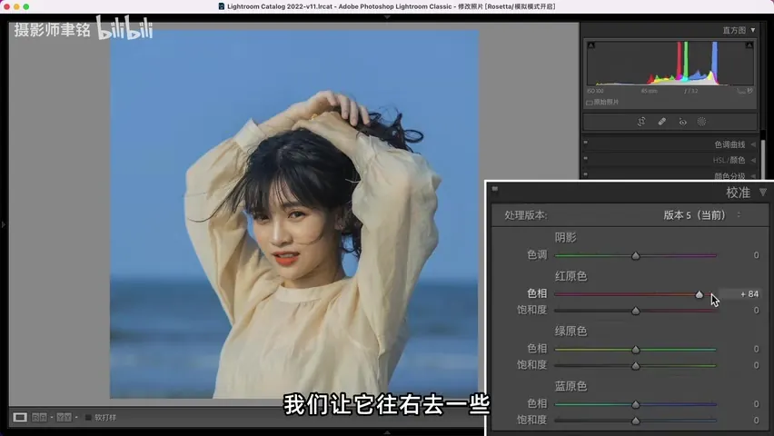
学习要点：红、绿原色向右，让肤色黄中带一点红润。
图 12 | 08:31 | 校准：处理蓝色基调。
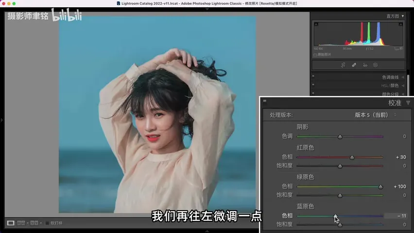
学习要点：蓝原色向左，背景蓝更接近青蓝，是淡雅蓝的基础。
图 13 | 08:57 | 明度曲线：提亮人物。
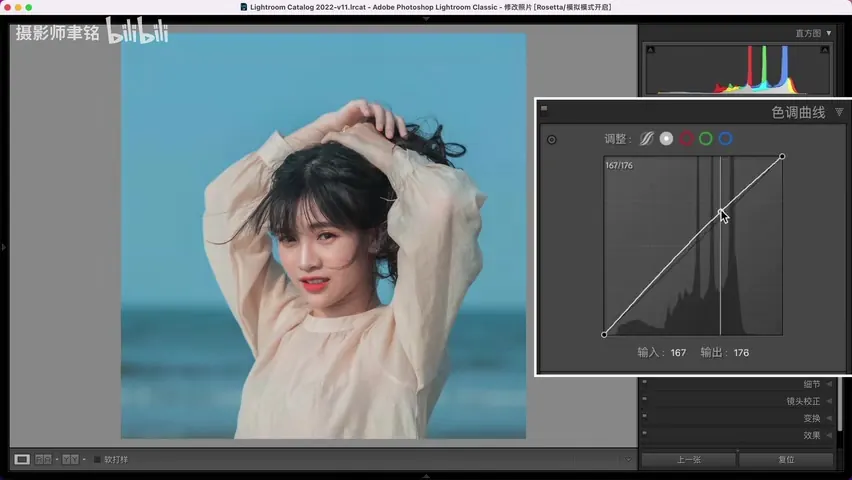
学习要点：曲线向上拱，重点影响偏高光区域，不等同于直接拉曝光。
图 14 | 09:23 | 曲线：压住最暗和最亮。
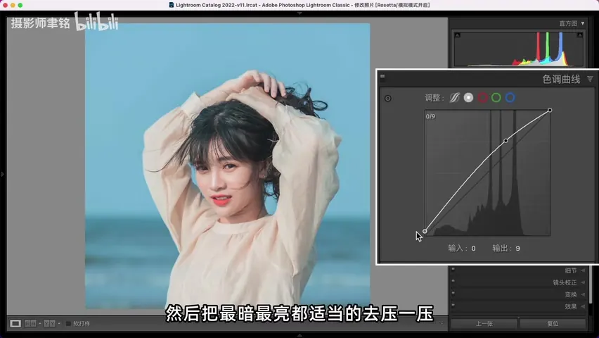
学习要点：让黑白端略微缺失，保留明快之外的一点胶片味。
图 15 | 09:38 | RGB 曲线：冷暖对比。
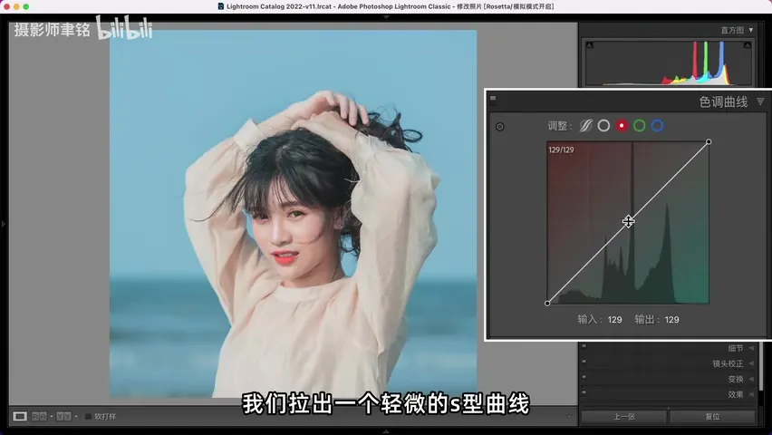
学习要点：暗部偏冷、亮部偏暖，三条颜色曲线需要整体平衡。
图 16 | 10:42 | HSL 橙色：修肤色。
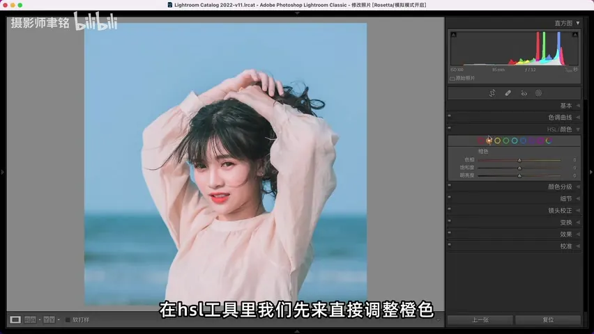
学习要点：橙色色相往黄、饱和度略降、明亮度提高，肤色会明显改善。
图 17 | 12:18 | HSL 蓝色：修背景。
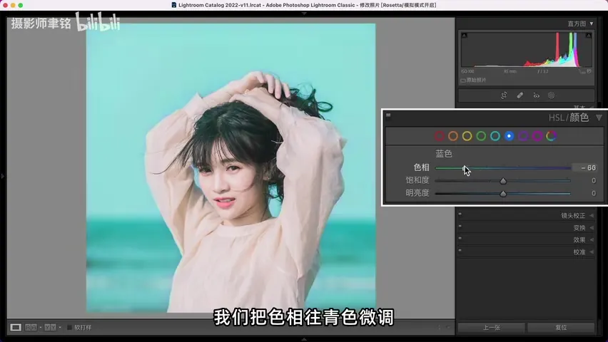
学习要点：蓝色色相往青、饱和度降低、明亮度提高，淡蓝背景更干净。
图 18 | 12:50 | 颜色分级：补清新氛围。
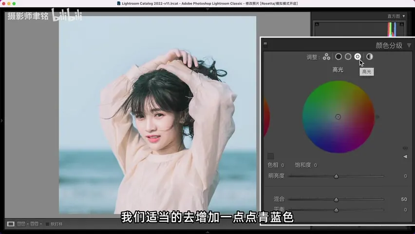
学习要点：高光加少量青蓝，阴影加暖色，冷暖搭配更自然。
图 19 | 13:18 | 成片对比。
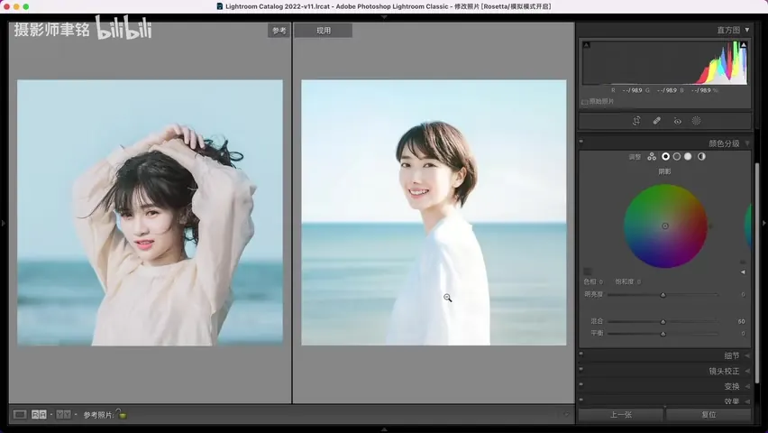
学习要点：方向接近即可，不要为追求完全一致而强行改变光照条件。
练习任务
选一张蓝天、大海或浅色背景的人像照片，先裁成 1:1，并确认主体位置是否稳定。
在不动 HSL 的情况下，用基础面板做出偏高调、明快但不过曝的基础画面。
用相机校准建立黄中带红的肤色和偏青的背景蓝，再观察是否过量。
用明度曲线提亮人物，同时压住最暗和最亮，让画面保留柔和边界。
用 HSL 单独修橙色肤色和蓝色背景，最后再用颜色分级补青蓝高光与暖色阴影。
保存原图、基础调整版、曲线版、最终版四张图，对比每一步改变的不是参数，而是影调和色彩关系。
复盘清单
检查项 | 通过标准 |
内容 | 题材和情绪接近滨田式自然温情，而不是只把任何照片调亮调淡。 |
构图 | 1:1 裁剪后主体稳定，画面简洁，没有重要信息被裁掉。 |
影调 | 整体偏高调，暗部不沉，亮部不过曝，直方图偏右但不硬顶。 |
肤色 | 淡黄中保留一点红润，不灰、不脏、不橘。 |
背景蓝 | 蓝色偏淡、偏青、明亮，饱和度克制。 |
氛围 | 清新、自然、明快，但不是冷白、失真或过度磨皮。 |
仿色判断 | 内容、影调、色调方向相似即可，不强行复制不同光照条件。 |
时间轴速查
时间 | 模块 | 重点 |
00:21-01:43 | 课程引入 | 提出内容、影调、色调三要素，并说明滨田风格的辨识度。 |
01:48-03:35 | 内容分析 | 自然温情、生活记录、1:1 正方形构图。 |
03:37-04:16 | 影调分析 | 高调直方图，暗部和亮部略微缺失。 |
04:18-05:24 | 色调分析 | 淡雅蓝、清新绿、淡黄肤色。 |
05:27-06:59 | 基础调整 | 1:1 裁剪，冷色温，提阴影黑色，压高光白色。 |
06:59-08:46 | 质感与校准 | 清晰度、饱和度/鲜艳度、红绿蓝原色校准。 |
08:50-10:38 | 曲线 | 明度曲线提亮与压两端，RGB 曲线建立冷暖对比。 |
10:39-12:40 | HSL | 橙色修肤色，蓝/浅绿修背景。 |
12:40-13:41 | 颜色分级与对比 | 高光加青蓝、阴影加暖色，最终与参考图比较。 |
全部图片
本页共保留 31 张来自 Word 的图片。上方正文中已按文档顺序展示，这里作为总览索引。